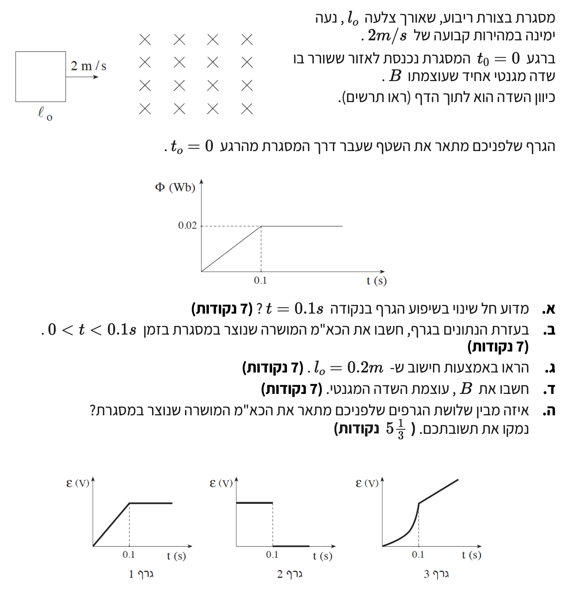

פתרון מוסבר ופדגוגי מונחה, צעד-אחר-צעד לרמת 5 יחידות לימוד
לפנינו מסגרת מוליכה ריבועית שאורך צלעה \( l_0 \), אשר נעה ימינה במהירות קבועה \( v = 2\text{ m/s} \). ברגע \( t_0 = 0 \) המסגרת מתחילה להיכנס לאזור שבו קיים שדה מגנטי אחיד שעוצמתו \( B \) והוא מכוון אל תוך הדף.
כאשר המסגרת מתחילה להיכנס לאזור השדה, החלק שלה שנמצא בפועל בתוך השדה המגנטי הולך וגדל. בהתאם לכך, גם השטף המגנטי העובר דרך המסגרת גדל בהדרגה. תהליך הכניסה הזה נמשך מהרגע \( t = 0 \) ועד שהמסגרת כולה נכנסת במלואה לתוך השדה. משך הזמן שלוקח לתהליך זה להתרחש שווה בדיוק לזמן שנדרש למסגרת לעבור מרחק השווה לאורך הצלע שלה, \( l_0 \).
אם נביט בגרף השטף המגנטי הנתון בשאלה, נראה כי השטף גדל בקצב קבוע (בצורה לינארית) מהרגע \( t = 0 \) ועד לרגע \( t = 0.1\text{ s} \), שבו הוא מגיע לערכו המרבי, \( \Phi_{\max} = 0.02\text{ Wb} \). לאחר מכן השטף נשאר קבוע. עובדה זו מעידה על כך שברגע \( t = 0.1\text{ s} \) המסגרת סיימה להיכנס במלואה לשדה. מאותו רגע ואילך היא נעה כולה בתוך אזור השדה, ולכן שטח המסגרת החשוף לשדה אינו משתנה יותר, וכתוצאה מכך גם השטף נשאר קבוע.

הסבר פיזיקלי מדוע חל שינוי בשיפוע הגרף בנקודה המצוינת, \( t = 0.1\text{ s} \).
השטף המגנטי העובר דרך המסגרת תלוי בחלק של המסגרת שנמצא בפועל בתוך אזור השדה המגנטי (נסמן שטח זה ב-\( A \)).
בתחום הזמן \( 0 \lt t \lt 0.1\text{ s} \): המסגרת נמצאת בעיצומו של תהליך הכניסה לתוך השדה המגנטי. ככל שהזמן חולף, חלק גדול יותר מהמסגרת נכנס אל תוך השדה, ולכן השטח החשוף לשדה, \( A \), הולך וגדל באופן קבוע. עקב כך, גם השטף המגנטי \( \Phi_B \) גדל בהתאמה באופן לינארי.
ברגע \( t = 0.1\text{ s} \) ואילך: המסגרת סיימה את כניסתה ונמצאת עכשיו בשלמותה בתוך השדה המגנטי. מכיוון שכל המסגרת כבר בפנים, השטח \( A \) החשוף לקווי השדה מפסיק לגדול והוא כעת נשאר קבוע (הוא פשוט שווה לכל שטח המסגרת הריבועית). היות שעוצמת השדה המגנטי \( B \) היא אחידה בכל המרחב, השטף המגנטי מגיע לשיאו ונעשה קבוע, ולכן שיפוע הגרף מתאפס.
מסקנה: שינוי השיפוע בנקודה \( t = 0.1\text{ s} \) נובע מכך שבאותו רגע המסגרת השלימה את כניסתה המלאה לאזור השדה המגנטי. מאותו רגע, שטח המסגרת הנמצא בתוך השדה איננו משתנה יותר, ולכן גם השטף המגנטי נשאר קבוע.
את גודלו של הכא"מ המושרה \( \varepsilon \) שנוצר במסגרת במהלך פרק זמן זה.
על פי חוק פאראדיי, גודל הכא"מ המושרה שווה לקצב השינוי של השטף המגנטי ביחס לזמן. מכיוון שהשטף משתנה בצורה לינארית, קצב השינוי הזה הוא למעשה שיפוע הגרף שנתון לנו בשאלה:
המסגרת עשויה מליפוף אחד (\( N=1 \)), ולכן גודלו המוחלט של הכא"מ המושרה הוא פשוט הערך המוחלט של שיפוע הגרף:
מסקנה: גודל הכא"מ המושרה הנוצר במסגרת בפרק הזמן שבו היא נכנסת לשדה הוא \( \varepsilon = 0.2\text{ V} \).
להראות באמצעות חישוב מדויק כי אורך הצלע של המסגרת הוא \( l_0 = 0.2\text{ m} \).
המסגרת מתחילה את הכניסה לשדה ברגע \( t = 0 \), ומסיימת אותה לחלוטין ברגע \( t = 0.1\text{ s} \). המרחק שאותו עוברת המסגרת, מהרגע שהצלע הקדמית שלה נוגעת בשדה ועד שהצלע האחורית שלה נכנסת פנימה, שווה בדיוק לאורך הצלע שלה, \( l_0 \). מכיוון שהיא נעה במהירות קבועה, נשתמש בנוסחת הדרך:
מסקנה: הוכחנו שמרחק הכניסה שווה לאורך הצלע, ולכן \( l_0 = 0.2\text{ m} \).
את גודלה של עוצמת השדה המגנטי, \( B \).
תחילה נחשב את השטח הכולל של המסגרת המוליכה הריבועית:
השטף המרבי מתקבל כאשר כל המסגרת נמצאת בתוך השדה המגנטי, כלומר כל השטח שלה \( A = 0.04\text{ m}^2 \) חשוף לקווי השדה. נציב את הנתונים בנוסחת השטף ונחלץ את \( B \):
כאשר המסגרת נכנסת לשדה, רק הצלע הימנית שלה (הצלע ה"חלוצה") חותכת בפועל את קווי השדה המגנטי במהירות \( v \), ולכן בה נוצר הכא"מ המושרה. ניעזר בנוסחה המוכרת של כא"מ בתיל מוליך:
מסקנה: עוצמת השדה המגנטי היא \( B = 0.5\text{ T} \) (טסלה).
לזהות את הגרף הנכון מבין שלושת הגרפים המוצעים בשאלה ולנמק מדוע הוא המתאים ביותר.
בטווח הזמן \( 0 \lt t \lt 0.1\text{ s} \): שיפוע גרף השטף המגנטי הוא קבוע (הייתה לנו עלייה לינארית ישרה בגרף השטף). מכיוון שהכא"מ המושרה פרופורציונלי לשיפוע של גרף השטף (לקצב השינוי), הכא"מ באותו פרק זמן חייב להיות ערך קבוע ושונה מאפס (כפי שחישבנו: \( 0.2\text{ V} \)).
בטווח הזמן \( t \gt 0.1\text{ s} \): ראינו שהשטף המגנטי קבוע לחלוטין ואינו משתנה יותר עם הזמן (כלומר \( \frac{d\Phi_B}{dt} = 0 \)). מתוך כך, על פי חוק פאראדיי, הכא"מ המושרה חייב להיות אפס.
נבדוק אילו מהגרפים עונים על הדרישות הללו:
גרף הכא"מ המושרה כפונקציה של הזמן (גרף 2)
מסקנה: הגרף המתאים שמתאר נכונה את התופעה הוא גרף 2.